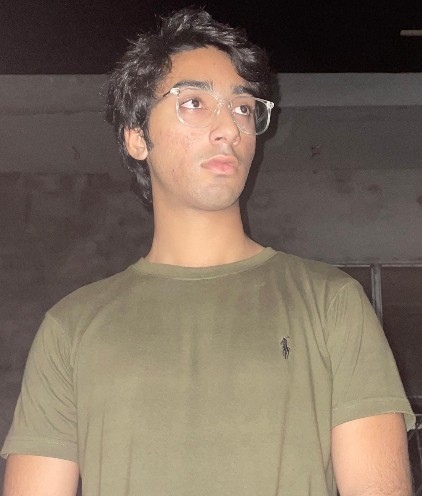

Saad Tiwana

Summary
I am hardworking student and a good problem solver with experience in Leetcode and web in deep.
Education
- Bachelor Of Scince, Computer Science-COMSATS University Islamabad (2023-2027)
- Fsc, Pre-Engineering-Thal Public School (2021-2023)
Work Experience
Web Developer - CloudCard
June 2024 - Present
- Developed and deployed a scalable web application using React for the front end and Node.js with MongoDB for the back end, improving the user experience and streamlining data processing.
- Integrated third-party APIs for payment gateways and shipping services into a client's e-commerce site, enhancing transaction processing and providing real-time shipping updates to customers.
- Implemented a CI/CD pipeline using Jenkins and Docker for automatic deployment on AWS, reducing manual errors and increasing deployment speed by 50%.
Skills
- HTML, CSS, JavaScript, React.js, Vue.js, Angular, Responsive Design, Cross-browser Compatibility, Web Accessibility
- Node.js, Express.js, RESTful APIs, GraphQL, Database Management (SQL/NoSQL), Server-Side Scripting
- Git, Docker, CI/CD, Cloud Platforms (AWS, GCP, Azure), Server Management
Award and Certifications
- Meta Certified Web Developer (2023)
Others
Contact Me
My Hobbies